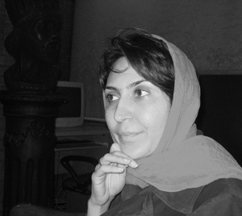

پذيرش > کمپین در بند > پرستو اللهیاری > جواب دادم که من عضو کمپین یک میلیون امضا هستم ولی انحرافی در آن نمی بینم
 گفتگو با پرستو اله یاری عضو کمیته داوطلبان کمپین در تهران گفتگو با پرستو اله یاری عضو کمیته داوطلبان کمپین در تهران

 جواب دادم که من عضو کمپین یک میلیون امضا هستم ولی انحرافی در آن نمی بینم جواب دادم که من عضو کمپین یک میلیون امضا هستم ولی انحرافی در آن نمی بینم
18 آبان 1387 - هدي امينيان - نسخه قابل چاپ
پرستو اله یاری از اعضای اولیه کمپین یک میلیون امضا و فعال در کمیته داوطلبان کمپین در تهران است. اواخر مهر ماه منزل او مورد تفتیش پلیس امنیت قرار گرفت و خودش نیز بازجویی شد. آنچه می خوانید حاصل گفتگوی هدا امینیان از اعضای کمپین و کمیته داوطلبان با پرستو در باره فعالیت هایش، اتفاقات اخیر و محدودیت هایی است که برفعالان کمپین اعمال می شود.
از خودت بگو و اینکه سابقه فعالیت اجتماعی داشته ای؟
متولد سال 60 و ورودی سال 78 در رشته کامپیوتر هستم و در حال حاضر شغل مرتبط با رشته تحصیلی ام را دارم. از زمان دبیرستان و دانشگاه فعالیت می کردم خصوصا زمان دانشگاه وارد فعالیت های دانشجویی و صنفی شدم. بعد از دانشگاه کمی با انجمن های مختلف از جمله انجمن حمایت از حقوق کودکان و یکسری انجمن های فرهنگی- اجتماعی همکاری می کردم تا اینکه کمپین شروع شد.
پس ورود تو به حوزه فعالیت زنان با کمپین بود؟
بله. به اعتقاد من حوزه زنان قبل از ایجاد کمپین حوزه بسته ای بود و سخت می شد وارد فعالیت های مربوط به زنان شد که کمپین آن مشکلات را برطرف کرد. کمپین فضای بازی را ایجاد کرد که راحت تر آدمها را از بیرون می پذیرفت و به خاطر همین من با کمپین وارد فعالیت حوزه زنان شدم؛ گرچه قبل از آن هم موضوعات مربوط به زنان را پیگیری می کردم مثلا در تجمعات سال های قبل بودم ولی به صورت کاملا فردی.

به صورت کلی چرا به فعالیت در حوزه زنان علاقه مند شدی؟
نمی شود گفت علاقه مندی چرا که این همان زندگی آدم است. در مورد من به خصوص وقتی وارد دانشگاه شدم یک دفعه فضای مردانه جامعه شوکه ام کرد و این فضا خیلی با روشی که رشد کرده بودم متفاوت بود. همه چیز برایم عجیب بود مثلا نوع نگاه آدمها، نوع برخورد استاد به دانشجوی دختر و تفاوت برخورد آنها با دانشجوی پسر... در محیط کار که خیلی وحشتناکتر بود. من به عنوان یک دغدغه همیشه این موضوع را پیگیری می کردم و در جریانش بودم ولی خوب کمپین یکی از بهترین اتفاق هایی بود که افتاد. کمپینی که یکسری مطالبه مشخص را خیلی واضح و آشکار پیگیری می کرد و همه چیز در آن بسیار شفاف بود و طبیعی بود که به چنین حرکتی بپیوندم.
همانطور که گفتی با کمپین به صورت جدی وارد فعالیت اجرایی برای زنان شدی؛ چه فعالیتی در کمپین انجام می دهی؟
از همان اول در کمیته داوطلبان بودم.
راجع به این کمیته و فعالیت هایی که در آن انجام می شود بگو...
می توان گفت کمیته داوطلبان بستر کمپین است. در ابتدای کار کمپین افراد یا کار تخصصی مثل آموزش و مالی و رسانه می کردند یا اینکه داوطلب بودند و هر کس که داوطلب بود عضو کمیته داوطلبان بود. وقتی تعداد داوطلبان زیاد شد کم کم به این اضطرار رسیدیم که کار را ساختارمندتر کنیم. در آن موقع کمیته داوطلبان به سه کمیته پیگیری، کارگاه ها و شهرستان ها تقسیم شد و از همان موقع من عضو کمیته پیگیری شدم تا الان. فعالیت اصلی این کمیته در واقع در ارتباط نگه داشتن تمام داوطلبانی است که عضو کمپین می شوند و از طریق این کمیته در روند کارها و تصمیمات قرار می گیرند. می توان گفت این کمیته کل زنجیره اعضای کمپین را به هم متصل نگه می دارد.
یکی دیگر از کارهایی که در این کمیته انجام می شود تهیه بانک اطلاعاتی است که از تمام افرادی که عضو کمپین می شوند و کارگاه آموزشی آن را می گذرانند تهیه شده است. راجع به این بانک و اطلاعات آن توضیح بیشتری بده...
در طول زمان فعالیت کمیپن مجموعه گزارشاتی از تمام داوطلبان گرفته می شد و این اطلاعات لازم بود که یک جا نگهداری شود تا جزو اسناد کمپین باقی بماند. به همین دلیل یک بانک اطلاعاتی ساختیم که مشخصات فردی همه داوطلبان در حد اسم و فامیل و شماره تلفن، فعالیت هایی که دوست داشتند در کمپین انجام دهند، توانمندی های آنها و یا آدمهایی که با آنها در ارتباط بودند را شامل می شد. این فرآیند همچنان ادامه دارد و اطلاعات داوطلبان جدیدتر به آن اضافه می شود.
به نظر شما نقش کمیته داوطلبان یا پیگیری در پیشبرد اهداف کمپین چیست؟
چون کمپین از همان اول سازمان، حزب یا NGO نبوده و نیست، در واقع همه چیز در آن با داوطلبانش پیش می رود بنابراین نقش کمیته داوطلبان بسیار پررنگ است چرا که لینک ارتباطی این داوطلبان به کار اجرایی در روند پیشبرد کمپین است و به صورت کلی یک بخش از همه بخش های کمپین است که در دیگر بخش ها هم حضور دارد و همسو با اهداف کمپین فعالیت می کند.
در خبرها خواندیم که دو هفته پیش منزل شما تفتیش شده و مورد بازجویی قرار گرفته ای. دلیل این اتفاق و روند تفتیش منزل و بازجویی را بیشتر توضیح بده...
در واقع اگر بخواهم خود اتفاق را شرح بدهم این است که یکشنبه صبح 28 مهر لباس شخصی هایی که خودشان را پلیس امنیت معرفی می کردند به منزل ما آمدند و با حکم تفتیش منزل تمام وسایل مرا گشتند.
البته اتفاقی که جمعه عصر افتاد نیز بی ربط به این مسئله نیست؛ جمعه عصر با چند نفر از بچه های کمپین در پارک لاله دور هم جمع شده بودیم و اتفاقی یک پلیس پارک آمد و از ما پرسید که شما دانشجویید. تعداد بیشتر بچه ها که دانشجو بودند جواب مثبت دادند اما آن پلیس با لحن خیلی تندی گفت که الان باید پارک را ترک کنید. دلیلش را پرسیدیم و او گفت که چرا نداره و همین که من می گویم، باید بروید. داشتیم جمع می کردیم برویم که یکی از داوطلبان جدید از پلیس پرسید که چرا ما باید از فضای عمومی پارک برویم و بعد چرا شما با این لحن ما رو بیرون می کنید. پلیس گفت که من هیچ توضیحی نمی دهم اگر توضیح می خواهی باید به دفتر کلانتری بیایی. همان موقع دو تا خانم چادری هم رسیدند و گفتند که باید به دفتر کلانتری برویم و اگر توضیح می خواهید آنجا می دهیم. این خانم ها کارت شناسایی به ما نشان ندادند و بعد معلوم شد که پلیس امنیت بودند. ما فکر کردیم که بهتر است تنها نرود، به همین دلیل من همراهش رفتم. در راه از آنجایی که نشسته بودیم تا دفتر کلانتری دو نفر آقای لباس شخصی آمدند و از ما کارت شناسایی خواستند. اول من از آنها کارت شناسایی خواستم ولی پلیس پارک که لباس پلیس تنش بود گفت لازم نیست که کارتی به شما نشان بدهند و همین که همراه من هستند کافیه و این شما هستید که باید به آنها کارت شناسایی بدهید. من هم گواهینامه ام را که تنها کارت همراهم بود دادم. مرد لباس شخصی گفت شما بروید و من پشت سرتان می آیم و همان لحظه مشغول بیسیم زدن شد. ما رفتیم دفتر کلانتری و یک کم معطل شدیم. در آنجا کسی نه توضیحی به ما می داد و نه چیزی از ما می پرسید. بعد از مدتی همان مامور امنیت رسید و ما را تک تک برد توی اتاق و بازجویی کرد. اطلاعات شخصی و ... را پرسید و ما هم همان توضیحاتی را که به مامور پارک داده بودیم به او هم گفتیم. بعد کارت شناسایی هر دو ما را نگه داشت و گفت شنبه صبح به شما زنگ می زنیم که بیایید کارت هایتان را از کجا بگیرید و از دادن هر توضیحی امتناع کرد. بعدا رییس کلانتری برای من توضیح داد که شما را شناسایی کرده اند، ممکن است کارت ادامه پیدا کند چون اینها پلیس امنیت هستند.
من شنبه منتظر بودم اما هیچ خبری نشد که یکشنبه صبح با حکم تفتیش منزل آمده بودند. همراهشان هم یک حکم احضار به محض رویت بود که زیر آن حکم نوشته شده بود در صورتیکه همراه این مامورها نیایید با حکم جلب برمی گردند. تا از محل کارم به خانه برسم مدتی طول کشید. وقتی رسیدم یک لیست 7-8 موردی به من نشان دادند از چیزهایی که برداشته بودند از جمله لپ تاب، کامپیوتر، 54 جلد کتاب شخصی خودم، 240 جلد کتابچه و دفترچه های کمپین و یک پک کامل سی دی، آلبوم شخصی و پین های کمپین. جالب اینجاست که کتابهای من که همه دارای مجوز وزارت ارشاد بود و از کتابخانه برداشته بودند در گزارش به نام 54 جلد کتاب احتمالا مشکوک ثبت شده بود و همینطور سی دی های نرم افزار به نام تعدادی سی دی منحرف.
پاسپورت مرا هم برداشته بودند اما در صورت جلسه شان قید نشده بود. من چون سفر داشتم در مورد پاسپورت و اینکه چرا تو صورت جلسه نیامده پرسیدم، گفتند این پیش ماست و نگران نباش. وقتی من و مادرم راجع به این موضوع پافشاری کردیم، پاسپورت را پس دادند اما گفتند نمی گذاریم که به سفر بروید.
بعد از تفتیش منزل و برداشتن وسایل من را به دادگاه انقلاب بردند. در آنجا آقایی که برای تفتیش منزل هم آمده بودند من را بازجویی کرد. خانمی هم که با آنها به خانه آمده بود کنار ما نشست. بازجویی 4 ساعته شروع شد که در این مدت 3- 4 بار ایشان گزارش را بست امضا و مهر و اثر انگشت گرفت و گفت تو همکاری نمی کنی، امشب می روی وزرا و بعد هم یک هفته می روی اوین بعد هم یک قرار وثیقه 100 میلیونی برایت صادر می کنیم؛ مثل بقیه کمپینی ها یا وثیقه می گذاری یا در زندان می مانی تا حکم دادگاهت بیاید.
در لپ تاب من که ضبط کردند بانک اطلاعاتی کمیته پیگیری داوطلبان بود و اطلاعات 400 نفر از اعضای کمپین. بازجوی من خیلی خوشحال بود که این بانک به دستش افتاده و با جزئیات در مورد آن از من می پرسید. البته امیدوارم به این واقعیت برسند که آن چیز مهمی نیست و اکثر این اطلاعات به صورت شفاف روی سایت کمپین موجود است و ما چیزی برای پنهانکاری نداریم.
در این بازجویی چهار ساعته تفهیم اتهام هم شدی؟
من توسط قاضی تفهیم اتهام نشدم ولی همان بازجو برگه بازجویی اش را با این جمله شروع کرد که شما به اتهام عضویت در کمپین انحرافی یک میلیون امضا بازداشت هستید. من جواب دادم که من عضو کمپین یک میلیون امضا هستم ولی انحرافی در آن نمی بینم.
توضیحی راجع به این اتهام نداد؟ و اینکه نسبت این واژه جدید "انحرافی" به کمپین چیست؟ واکنش شما به این اتهام ساختگی جدید چه بود؟
خیلی سر این موضوع بحث کردیم. در واقع من بیشتر از او توضیح می خواستم و می گفتم که انحراف چیه و او می گفت مشخص کردن این انحراف کار من نیست و مراجع قضایی باید مشخص کنند. گفتم شما به عنوان یک مامور امنیتی من را آورده ای و می گویی من دارم یک کار انحرافی می کنم، پس به من جواب بدهید که این احراف چیست ولی او امتناع می کرد و می گفت این کار من نیست. آخر بازجویی خیلی اصرار داشت که تو باید تعهد بدهی که دیگر با کمپین همکاری نمی کنی. من هم گفتم چنین تعهدی نمی دهم و در جواب نوشتم من مبارزه برای حقوق زنان را درهر شرایطی و در هر مکانی و زمانی ادامه خواهم داد و اینکه با چه گروهی کار کنم بنابر شرایط تصمیم شخصی می گیرم. دوباره گفت منظور من از سوال بالا کمپین یک میلیون امضا است و من هم نوشتم منظور من از جواب بالا مبارزه برای حقوق زنان است. خیلی بحث کردیم، می گفت باید تعهد بدهی و من هم گفتم تا هروقت مراجع رسمی مرتبط اعلام نکردند که چرا کمپین انحرافی است و کجای کار آن غیر قانونی است من به کارم ادامه می دهم. گفت هیچ جای قانون اساسی نیامده که کمپین باید وجود داشته باشد، من هم گفتم این یکی از اصول قانون جمهوری اسلامی است که اصل بر برائت است ولی شما بی دلیل تهمت می زنید، کمپین هم غیرقانونی نیست.
مدتی است که شاهد ممنوع الخروج کردن فعالان زنان به خصوص فعالین کمپین یک میلیون امضا، جلوگیری از سفر آنان و ضبط گذرنامه شان هستیم که آخرین مورد آن هم جلوگیری از سفر سوسن طهماسبی بود. چرا از سفر شما ممانعت نکردند و شرایطشان برای اجازه این سفر چه بود؟
من همان روز باید به یک سفر کاری می رفتم. در ابتدا فکر می کردند سفر من به جنبش زنان مربوط است و می پرسیدند می خواهی آنجا چکار کنی؟ من هم گفتم این سفر کاری است، من در یک شرکت صنعتی کار می کنم و قرار است در سمینار سالانه آن شرکت کنم. البته از این سفر به عنوان دستاویز استفاده کردند که به من فشار بیاورند و حین بازجویی تهدید می کردند که نمی گذاریم به سفر بروی. من این توضیح را دادم که در این سمینار از 13 کشور مختلف شرکت می کنند و برنامه من از قبل تنظیم شده است، باید آنجا باشم و سمینارمان را ارائه کنیم و اگر من نباشم کاملا مشخص می شود که چرا نیستم و فکر می کنم این اصلا برای شما خوب نیست؛ا لبته این انتخاب شماست که من به دلیل بازداشت بودن به خاطر عضویت در کمپین آنجا نباشم و یا بروم و به عنوان یک خانم مهندس ایرانی سمینارمان را بدهم و برگردم. بعد از آن از من تعهد شفاهی گرفتند که به شرطی که این یک هفته هیچ حرفی از کمپین نزنم و هیچ فعالیتی برای جنبش زنان نکنم، بروم و باز به این شرط که با هیچکس راجع به این خبر مصاحبه نکنم؛ به محض اینکه برگشتم هرجا و تحت هر شرایطی که مرا احضار کردند قول بدهم که بروم. البته من هم گفتم که من فقط از طرف خودم این قول را می دهم که ظرف این یک هفته با هیچ کس مصاحبه نکنم ولی مسئول دیگران نیستم و اینهمه آدم از نوع برخورد و عملکرد شما با من مطلعند و من در قبال دیگران هیچ تضمینی نمی دهم که خبر آن کار نشود.
قبلا هم پیش آمده بود که دم در خانه شما بیایند، راجع آن هم توضیح بده و اینکه در این مورد چه اتفاقاتی افتاد؟
این مزاحمت ها دقیقا از اواخر اولین سالگرد کمپین شروع شد. ما هر جلسه ای که داشتیم چه جلسه با داوطلبان جدید و چه جلسه های درون گروهی خودمان و توی خانه هر کدام از ما که بود، پلیس امنیت خبر داشت. دم در خانه می آمدند و اصرار می کردند که باید جلسه را تمام کنید و بروید و تهدید می کردند که اگر اینکار را نکنید ما با یک برخورد بدتر وارد منزل می شویم. فکر می کنم 3 یا 4 بار برای خانه ما این اتفاق افتاد یا مثلا مواقعی بود که قبل از اینکه جلسه تشکیل شود به من زنگ می زدند و می گفتند امروز ساعت 6 جلسه است و باید کنسل شود. ما فکر کردیم به دلیل این فشارها جلسه هایمان را در مکان های عمومی برگزار کنیم مثل پارک، که ما را از فضای عمومی که متعلق به همه است هم بیرون کردند.
بعد از اینکه به دم منزل شما می آمدند بازجویی یا احضار هم شدید؟
هیچوقت احضار قانونی نبود ولی مثلا حداقل دوبار نزدیک به یک ساعت و نیم مرا دم در بازجویی کردند حتی بدون اینکه هیچ حکم یا کارت شناسایی رسمی نشان دهند. اذیت هایی هم داشتند مثلا اینکه 1 نصفه شب زنگ همسایه را بزنند و از آنها بپرسند که امروز اینجا جلسه بوده یا نه؟ و یا 5 صبح که همه خوابند زنگ خانه را بزنند و وقتی در را باز می کردیم می دیدیم که همان ماشین پلیس امنیت در حال خارج شدن از کوچه است یا مثلا تعداد دفعات زیادی راجع به زندگی خصوصی من از همسایه ها پرسیده بودند. یعنی این جور اذیت ها هم برای ترساندن و ایجاد فشار بیشتر وجود داشت، بیشتر از یکسال است که تمام این اتفاق ها می افتد.
پس این اتفاقات غیر قانونی در حد اذیت و آزار برای ایجاد ترس و اعمال فشار وجود داشت. همانطور که شاهدیم رویه جدیدی که در مورد فعالان زنان پیش گرفته شده، تفتیش منزل آنان است. نظر تو در این باره چیست؟
روندی که پیش گرفته شده که با حکم تفتیش منزل بیایند خیلی جدید است. تا قبل از این اگر دستگیری بود در حین امضا جمع کردن یا موقع تجمع بوده و یا احضار به دادگاه ولی اینکه بدون هیچ دلیلی و با حکم تفتیش منزل بیایند و وسایل شخصی ات را زیر و رو کنند جدید است و فکر می کنم این جزو اولین بارهاست.
خودت فکر می کنی که دلیل این برخوردها چیست؟
من در این مورد خیلی با بازجو بحث کردم. در واقع همان داستانی است که درباره مجله زنان پیاده شد یعنی اینها حرفشان این بود که مطالبات شما هیچ مشکلی ندارد اما شما دارید سیاه نمایی می کنید ولی خوب در عین حال دلیل مستدلی برای حرفهایشان ندارند، به خاطر همین با فشار روی اعضای کمپین خصوصا آنهایی که دارند کار اجرایی می کنند می خواهند عملا آن را تضعیف کنند.
برای بازگرداندن وسایلت با شما تماسی گرفته نشده؟ احضاریه ای دریافت نکرده ای؟
صبح روز شنبه 11 آبان بازجوی پرونده ام تماس گرفت و گفت یکشنبه 12 آبان ساعت 8 صبح بروم به همان مکان قبلی، یعنی دادگاه انقلاب و ساختمان مجاور آن، برای تحویل گرفتن کیس کامپیوتر و لپ تاپم. من خواستم که گواهینامه ام را هم پس بدهند که گفتند حالا بیا، آن را هم سعی می کنیم بدهیم.
چه وسایلی را به شما برگرداندند؟ آیا دوباره بازجویی شدی و برخورد آنان چگونه بود؟
روز یکشنبه 12 آبان، من برای گرفتن وسایلم مراجعه کردم. من را به یکی از اتاقهای مشابهی که قبلا در آن بازجویی شده بودم، بردند که در این اتاق ایشان و یک خانم حضور داشتند؛ کیس، لپ تاپ، آلبوم شخصی و تعداد سه دفترچه که دستنوشته های شخصی من بود و یک سررسید که جزوه های درسی دانشگاهی بود را برگرداندند و رسیدی برای تحویل گرفتنش از من گرفتند. جالب است که دور دفترچه های شخصی من یک روزنامه پیچیده بودند و رویش نوشته بودند "مطالب شخصی است از خواندن آن جدا خودداری کنید" اما خوب موضوع این است که اگر مطالب خوانده نمی شد به این موضوع نمی رسیدند که شخصی است، منظورم این است که هجوم به حیطه خصوصی می آورند و بعد با این ظاهر آنها را تحویل من می دهند. بازجویی رسمی صورت نگرفت ولی ضمن تحویل گرفتن وسایل، بازجو صحبت هایی کرد و از من تشکر می کرد که اطلاعاتی را در اختیارشان قرار داده ام که گزارش کاملی از 400 داوطلب نیز در آن بوده است. من هم گفتم که شما وارد خانه من شدید، وسایل من را بردید، با بازجویی تحت اجبار با من برخورد کردید وبعد به این می گویید همکاری؟ در ضمن آن اطلاعات چیز تازه ای نبود و همه این اطلاعات در سایت کمپین و بقیه مستندات مربوط به آن موجود بوده و هست و هیچ چیز پنهانی وجود نداشته که حالا شما به دست آورده باشید. علاوه بر آن کمی به من اعتراض کرد که چرا شانتاژ خبری کردیم و من توضیح دادم که شانتاژ نبوده است و به هر حال کاری بوده که شما کردید، در ادامه، سخنان متناقض دیگری می گفت مثل اینکه تو بازداشت نشدی و به خاطر همین خبرت پخش نشد و آن طور که باید معروف نشدی که من ترجیح دادم جوابی به سخنان متناقضش ندهم.
در آخر هم مرا تهدید کرد که اگر هر جلسه ای دیگری در خانه ات برگزار شود و یا کار دیگری در کمپین انجام بدهی به پرونده ات اضافه خواهد شد. بعد در مورد گوشی موبایل که آن را هم همان روز بازجویی اولیه از من گرفته بودند و گواهینامه پرسیدم که آنها را هم با رسید اضافه تحویل دادند. در مورد کتابهای شخصیم و چندین مجلد مجله زنان که برده بودند، گفتند اینها تحویل قاضی پرونده است و او بعدا تصمیم می گیرد که برگردانده شود یا نه. دفترچه ها و کتابچه های کمپین را هم که فایلهای PDF همه آنها در سایت هست را هم گفتند تحویل نمی دهیم و منهدم می شود. در کل برخوردشان به نظرم بسیار متناقض و غیر حرفه ای بود که سعی داشتند فشار روانی را بر من تحمیل کنند اما نوع وارد آوردن فشار و تناقضاتش آنقدر مشخص بود که بیشتر باعث تاسف می شد.
ارسال به
بالاترین
،
توییتر
،
فریندفید
،
فیسبوک
در همين بخش :
 بهاره هدایت را آزاد کنید؛ درخواست ۴۵۵ تن از فعالان زنان، دانشجویی واجتماعی از قوه قضاییه بهاره هدایت را آزاد کنید؛ درخواست ۴۵۵ تن از فعالان زنان، دانشجویی واجتماعی از قوه قضاییه
بیانیه بیش از ۱۵۰ تن از مدافعان حقوق بشر بین المللی برای آزادی بهاره هدایت و مریم شفیع پور
ششمین روز از کمپین «ده روز با بهاره هدایت» با عنوان «روز سلامت»
پیام ضیا نبوی و مجید دری از زندان کارون اهواز به کمپین«ده روز با بهاره هدایت»
روز پنجم از کمپین ده روز با بهاره هدایت:« بهاره، یک فرزند و یک خواهر است»
ديگر بخش ها :
طرح یک میلیون امضا
|
مقالات
|
سایت نوشته ها
|
اخبار
|
گزارش كمپين
|
گفت و گو
|
علیه سکوت
|
كوچه به كوچه
|
نامه های شما
|
گزارش ویژه
|
گفتگو با اعضا
|
ویژه سالگرد کمپین
|
تصویر برابری
|
دل آرام علی
|
تریبون
|
مقالات
|
تاریخ شفاهی
|
خارج از چارچوب
|
کتابخانه
|
درباره کمپین
|
کمپین در شهرها
|
کمپین در بند
|
صدای تغییر
|
ویژه 22 خرداد
|
لایحه حمایت از خانواده
|
گالری
|
عشا مومنی
|
امیر یعقوبعلی
|
خدیجه مقدم
|
راحله عسگری زاده و نسیم خسروی
|
پروین اردلان،جلوه جواهری، مریم حسین خواه، ناهید کشاورز
|
زینب پیغمبرزاده
|
سعیده امین، سارا ایمانیان، محبوبه حسین زاده، ناهید کشاورز و همایون نامی
|
احترام شادفر
|
نسیم سرابندی زاده،فاطمه دهدشتی
|
وبلاگ مهمان
|
پرونده خرم آباد
|
دستگیری ها
|
مریم مالک
|
پرستو اللهیاری
|
مهرنوش اعتمادی
|
سمیه رشیدی
|
Other Languages
|
همراهان
|
«فراخوان کمپین ده روز با بهاره هدایت»
| English
|